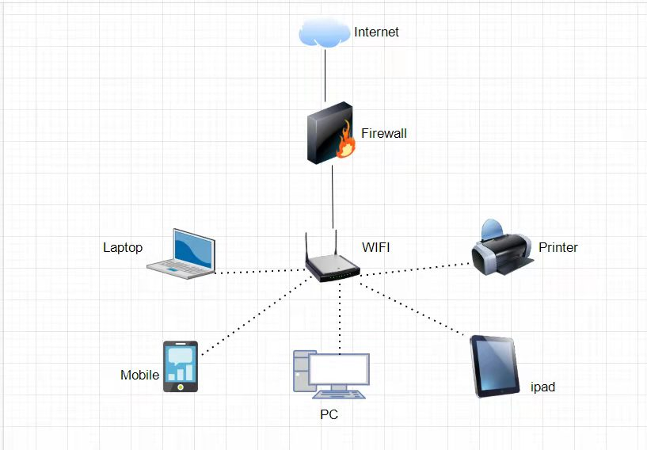
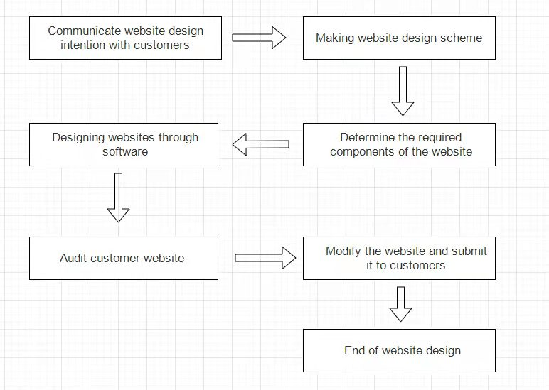

Advance：Gordon
IT Project
My IT project is web design, which is to meet the needs of many customers for web pages and complete various requirements of customers for web pages.
Sense of worth
In order to meet the business needs of our customers, we will get equal compensation for the completion of this project. We will also invest enough resources in this project to ensure that the project can be completed and that the value of the product meets the expectations.
Method
First, we will determine the components and elements needed to create this web page by understanding the needs of customers, and determine the purpose of this website. Then the basic scheme of designing the website is determined through the discussion between the teams, and then the preliminary web page is created through the use of relevant technical software and submitted to the customer for review. Finally, make the final modification to the website and submit it to the customer.
Required software and hardware
| Software | Hardware |
|---|---|
| Codepen | Inter Core i7 |
| JavaScript | GTX2080Ti |
| Dreamweaver | EEPROM |